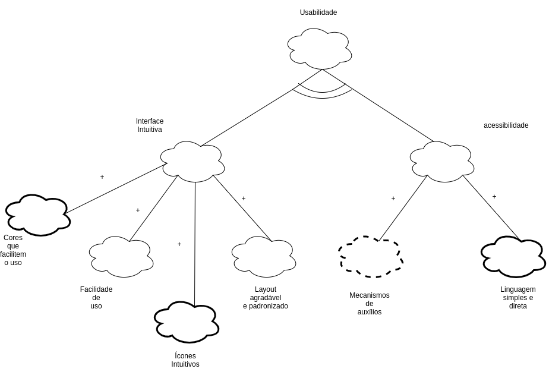
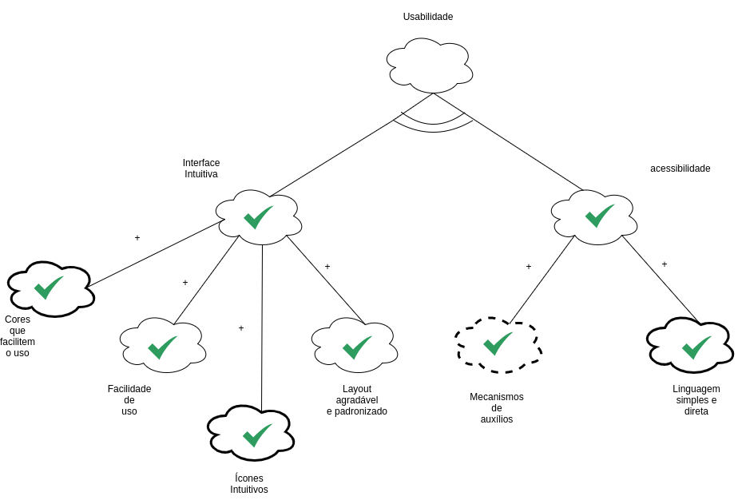
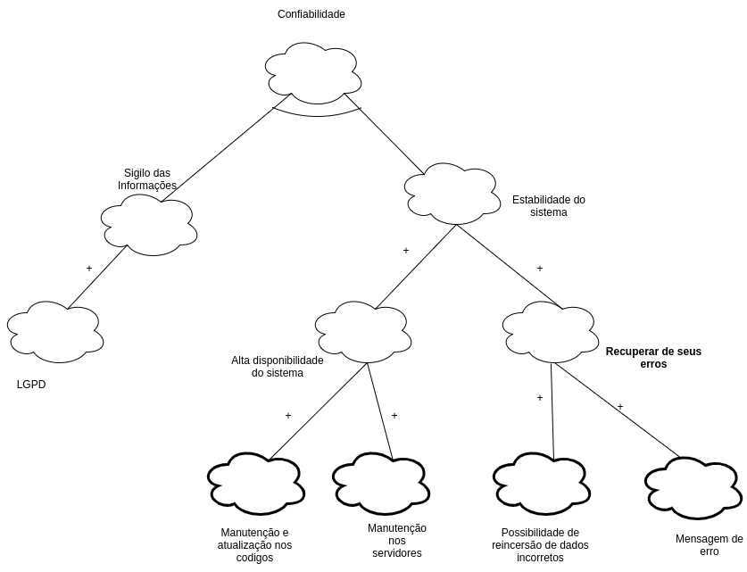
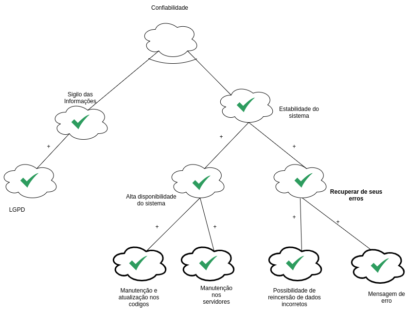
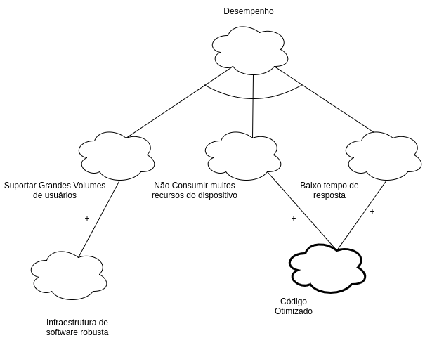
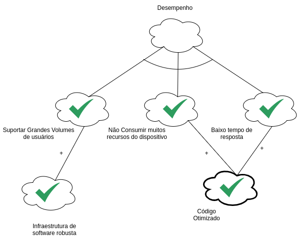

NFR Framework
Histórico de Versões
| Data | Versão | Descrição | Autores | Revisor |
|---|---|---|---|---|
| 28/03/2021 | 0.1 | Criação do documento | Luis Marques e Giovana Dionisio | Pedro Haick |
| 29/03/2021 | 0.2 | Adição de NFR usabilidade,confiabilidade e desempenho | Luis Marques | Pedro Haick |
| 29/03/2021 | 0.3 | Adição da definição e legendas | Giovana Dionisio | Pedro Haick |
| 29/03/2021 | 0.4 | Adição de NFR geral, portabilidade e disponibilidade | Giovana Dionisio | Pedro Haick |
Definição
O NFR Framework trata de uma abordagem orientada a requisitos não funcionais que auxilia na condução da Engenharia de Requisitos. Esse Framework auxilia os desenvolvedores na implementação de soluções personalizadas para o produto de software, os guiando na escolha dentre as possíveis alternativas de desenvolvimento.
A representação dos requisitos dentro no NFR Framework é realizada através de softgoals. Os softgoals caracterizam objetivos em um alto nível de abstração, sem definições ou critérios de satisfação precisos. Eles podem representar requisitos não funcionais (softgoals NFR), funcionalidades (softgoals de operacionalização) ou argumentações sobre a modelagem (softgoals de afirmação).
Para a avaliação da satisfação ou não dos softgoals são estudadas suas inter-relações e influências exercidas. Tais relações são classificadas de acordo com a contribuição que os softgoals estabelecem e são divididas em:
AND: o softgoal pai só é satisfeito se todos os seus filhos forem satisfeitos;
OR: o softgoal pai é satisfeito quando pelo menos um de seus filhos forem satisfeitos;
MAKE: a satisfação do softgoal filho garante a satisfação do pai;
BREAK: a satisfação do softgoal filho nega a satisfação do pai;
HELP: a satisfação do filho satisfaz parcialmente o softgoal pai;
HURT: a satisfação do filho nega parcialmente a satisfação do pai;
UNKNOWN: a contribuição entre softgoal pai e filho é desconhecida;
EQUALS: a satisfação de um softgoal equivale a satisfação do outro e a sua não satisfação equivale a não satisfação do outro;
SOME +: o softgoal filho contribui positivamente com o pai, mas não se sabe a intensidade;
SOME -: o softgoal filho contribui negativamente com o pai, mas não se sabe a intensidade.
Essas relações e contribuições são expressas em um grafo chamado Grafo de Interdependência de Softgoals (SIG).
Legenda
No SIG, são utilizadas as seguintes representações:
Quanto à classificação do softgoal:

Figura 1: Legenda para a classificação de softgoals. Autor: Giovana Dionisio.
Quanto à contribuição:

Figura 2: Legenda para a classificação de contribuições. Autor: Giovana Dionisio.
Quanto à satisfação do softgoal:

Figura 3: Legenda para a classificação da satisfação dos softgoals. Autor: Giovana Dionisio.
NFR Geral

Figura 4: NFR Geral. Autor: Giovana Dionisio.
NFR de Usabilidade
Sem propagação

Figura 5: NFR de usabilidade, sem propagação. Autor: Luis Marques.
Com propagação

Figura 6: NFR de usabilidade, com propagação. Autor: Luis Marques.
NFR de Confiabilidade
Sem propagação

Figura 7: NFR de confiabilidade, sem propagação. Autor: Luis Marques.
Com propagação

Figura 8: NFR de confiabilidade, com propagação. Autor: Luis Marques.
NFR de Desempenho
Sem propagação

Figura 9: NFR de desempenho, sem propagação. Autor: Luis Marques.
Com propagação

Figura 10: NFR de desempenho, com propagação. Autor: Luis Marques.
NFR de Disponibilidade
Sem propagação

Figura 11: NFR de disponibilidade, sem propagação. Autor: Giovana Dionisio.
Com propagação

Figura 12: NFR de disponibilidade, com propagação. Autor: Giovana Dionisio.
NFR de Portabilidade
Sem propagação

Figura 13: NFR de portabilidade, sem propagação. Autor: Giovana Dionisio.
Com propagação

Figura 14: NFR de portabilidade, com propagação. Autor: Giovana Dionisio.
Referências
PRESSMAN, Roger S.; MAXIM, Bruce R.. Engenharia de software: uma abordagem profissional. 8 ed. Porto Alegre: AMGH, 2016. p 210, 211.
DA SILVA, Reinaldo Antônio. NFR4ES: Um Catálogo de Requisitos Não-Funcionais para Sistemas Embarcados. 2019. 155 p. Dissertação (Pós-Graduação em Ciência da Computação)- Centro de Informática, Universidade Federal de Pernambuco, 2019.
SERRANO, Milene, SERRANO, Maurício. Requisitos - Aula 13. 40 slides. Disponível em: https://aprender3.unb.br/pluginfile.php/693340/mod_resource/content/1/Requisitos%20-%20Aula%20019a.pdf. Acesso em: 29 de março de 2021.